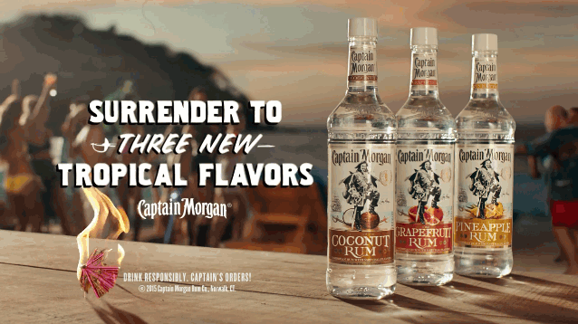
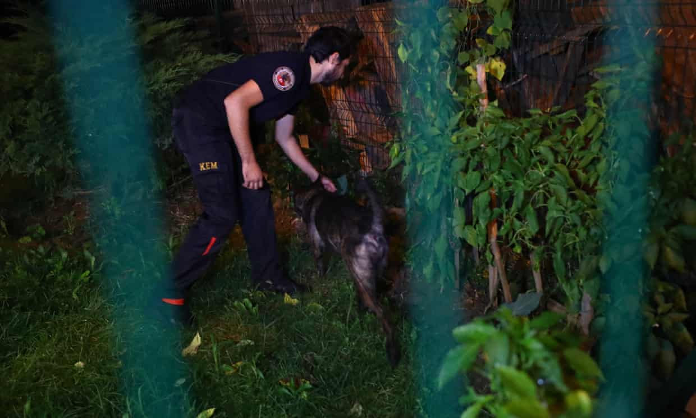
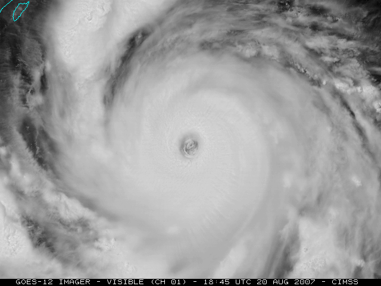
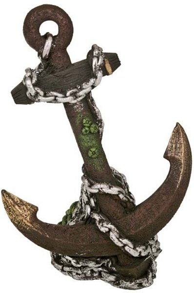

L'Olonnois hacks a Spaniard to pieces...
REPORT: Hacked, twisted, burned, and starved to death...
Porto Bello sacked and Panama set ablaze...
UPDATE: He gnawed on the heart like a ravenous wolf...
Horrible crimes and inhuman cruelties...
Over 500 men slain and sunk in boats...
Revenge on the killer crocodiles...
VICIOUS CAPTAIN CUTS OUT SPANIARD’S HEART ***AND EATS IT!***
Ukraine crime gang hid proceeds in luxury London flats...
Uber, Apple, and Facebook are still evading United States taxes on an epic scale...
Revealed: Queen of England's private estate invested millions of pounds offshore...
Environmental icons secretly investing in fossil fuels...
Bahamas, US Virgin Islands and St. Kitts and Nevis added to EU blacklist...
Unapproved drug sellers found offshore trust haven in St. Kitts and Nevis...
UNOCOIN FOUNDER ARRESTED FOR OPERATING INDIA’S FIRST BITCOIN ATM...
Delaware authorities seized more than $200K in bitcoin from British hacker...
Twitter locks Elon Musk's account after bitcoin tweet...
link text...
link text...
link text...
link text...
Indian cinemas put on lockdown to prevent piracy...
link text...
link text...
link text...
link text...
link text...
link text...
link text...
link text...
link text...
link text...
link text...
link text...

Jamal Khashoggi body double created false trail in Turkey...
Savage murder of Saudi journalist was premeditated...
Saudi foreign minister says killing was 'tremendous mistake'...
Search for Khashoggi's remains focuses on consul general's house...
Khashoggi's body parts found...

The Atlantic and Pacific Ocean hurricane season is most powerful on record...
Hurricane Willa: 2018 most INTENSE season on record...
Warming ocean waters intensified devastating hurricane season...
Pirates of the Caribbean getting a reboot...
Paradise lost: Tourist spots in danger of being loved to death...
Global warming could be catastrophic...
California's underwater forests being eaten by the 'cockroaches of the sea'...
